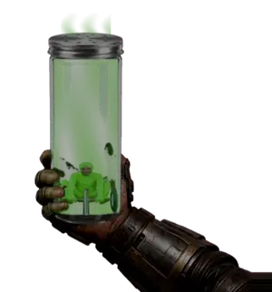
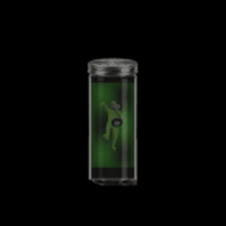

Real streets. Fake physics. Up to 16 players. Bring a jetpack.
BAKOQUAKE: ONLINE SERVER 72.62.241.93:26000 (PRESS F1 IN GAME)JETPACKS AT EVERY YELLOW ARMORDO NOT PICK UP THE PICKLE12 MAPS, ALL IN ONE ZIPBAKOQUAKE: ONLINE SERVER 72.62.241.93:26000 (PRESS F1 IN GAME)JETPACKS AT EVERY YELLOW ARMORDO NOT PICK UP THE PICKLE12 MAPS, ALL IN ONE ZIP
BAKOQUAKE turns Quake into a deathmatch through real Bakersfield: a LAN-party warehouse on E 21st Street, the Bakersfield Sign, the Fox Theater, a casino down Union Avenue. Every block was rebuilt from photos, city maps and a lot of walking around in Street View.
The guns are not Quake's. There is a hammer you charge, a pink lady that chases you down, a laptop with a guided head, a pickle trap, a Dookie Bazooka that blasts poop on the walls, a jar full of tiny green guys and a cannon that launches a man. Jetpacks sit next to every yellow armor, and you can drive vans through the streets.
Losing should not feel bad, so the game helps whoever is behind. You get the intro the first time you start it, and your settings (keys, resolution, mouse) are saved when you quit and never reset.
How to install:
Download BAKOQUAKE_v1.10.zip. It is about 1.01 GB, so give it a minute.
Unzip the whole BAKOQUAKE folder anywhere. The Desktop is fine.
Double-click PLAY BAKERSFIELDQUAKE, the icon with the Bakersfield Sign. The game opens with the BAKOQUAKE intro. If Windows asks about zircon_beta_gcc.exe and the firewall, allow Private networks.
From the intro press F1 to join the online server, or F2 for a LAN game. Esc opens the menu.
Online server and other ways to play:
Mode
How to start
Players
Key
Online server
Run the game, then join. Or open the console with ~ and type connect 72.62.241.93:26000
up to 16
F1
LAN party
One PC runs Start Server. Everyone else runs PLAY BAKERSFIELDQUAKE (it joins by itself) or presses the key.
up to 16
F2
Vote a map
Say vote map fox in chat (T), then everyone presses yes or no.
any
F5F6
Weapons:
Every gun below is in the game. Drag a card to spin it, scroll to zoom, and press FULL 3D for the whole viewer.
Pink Lady (Key 5)SPRITE
Chases players and whites out your screen in milk.
WEW Cannon (Key G)3D MD3
Hold fire to bend the barrel 58° and launch Wheelman.
Survivor WheelmanSPRITE
Eight post-explosion dances. Press Anim to cycle them.
Mega Man (Key 9)3D MD3
Boat-motor headcrab. Press Skin for the Blue Shell.
Pickle Surprise (Key X)SPRITE
A giant screaming pickle trap, in four skins.
Jar o' Green Guys (Key I)ANIMATED

Hold fire to shake the jar, let go to throw it. Unleashes 12 wheel-driving green men that circle enemies 3 times before lunging in to attack.
V12 Supercar3D MD3
A rideable cruiser, parked in bklan4 and bklan5.
In action:
Pink Lady (Key 5)
WEW Cannon (Key G)
Wheelman blast

Jar o' Green Guys bursts
Maps:
Click a picture to enlarge it. All twelve maps are in the zip: aerowalk, bakolansmall, bfarena, bklan, bklan4, bklan5, fox, gallup, midair, nanaplaza, orcom and spruce.